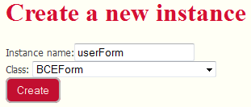
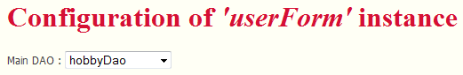
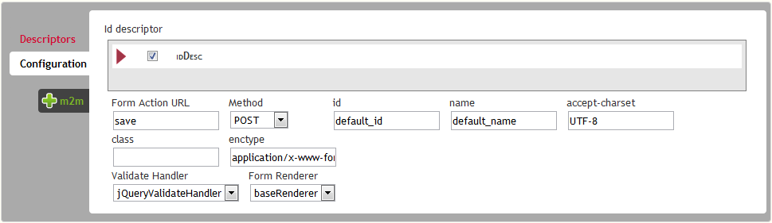

In this quick start guide, we will see how you can use BCE to build a user form
First thing you have to know, is that BCE directy relies your application's ORM system. For now, Mouf's ORM system is TDBM, but when others will be available, we will do our best to provide multi-ORM support. You will find a detailed description of BCE's architecture in the dedicated chapter
For this tutorial, let's assume a very classic database schema for handling users.
We have users. Users have some basic attributes as name, email, etc..., and they have a role defined by a foreign key named role_id. Finally, a user may have some Hobbies, which is represented by a many to many relationship table.
First thing you have to do is, obviously creating a BCE instance. This is done, as usual, by hiting the "create a new instance" link of the ribbon menu. For example, we create a userForm instance :
Once you've done this, you reach the dedicated configuration interface of BCE that embeds a lot of helpfull functionnalities. A "view properties" link in the left menu will get you back to the classic instance page).
The first thing to do is to select a DAO. As soon as you have chosen your DAO, the interface will display the existing field descriptors and eventually suggest the detected ones (those that are not mapped by an existing descriptor).
Note: The detected fields are the one that map getters and setters of the bean handled by the dao you selected, which means basically all columns that are located IN the (user) table. If we have a look back to the Data Model defined previously, all fields will be detected exept the "hobbies" relations, and the role_id field will be automatically set as a "ForeignKey" Field Descriptor (see PHP Documentation for a detailed description of the ForeignKeyFieldDescriptor Class)
There is a second tab called "configuration", that allows you to define the specific Id FieldDescriptor, and some other form related attributes (renderer to be used, id, name, action, etc...)
Any time you will access the form configuration interface, you will be suggested a FieldDescriptor for each field that doesn't seem to be handlded already. These fields will appear with a green outline, whereas existing ones have a white one. By default, when you create the form, all "suggested" fields are checked to be created.
// Let's get the DAO $userDao = Mouf::getUserDao(); // Let's get the bean $userBean = $userDao->getUserById(42); // Let's display the name echo $userBean->getName();